Accueil › Gouvernance
Gouvernance
Les organes du réseau et leurs membres, tels que présentés lors du Conseil de gestion élargi du 6 avril 2026.
Comment le réseau est organisé
Du Congrès aux comités locaux, chaque organe a un rôle défini par les statuts et le règlement intérieur adoptés le 20 février 2026.
Conseil de Gestion Administrative
Assure l’orientation stratégique, la supervision générale et la bonne gouvernance du réseau. Il définit les grandes orientations, valide le plan d’action annuel et supervise les organes.
- KAMATE CHEIKH OUMAR ABDULPrésident
- LOUKOU ZIAHI VANESSASecrétaire aux Finances (Trésorière générale)
- KOUADIO GBOKO KOFFI ALAIN1er Vice-Président
- DOUHOURE TAKOUE HERMANN THIERRY2e Vice-Président
- KONATE RACHEL EPSE KOUAKOU3e Vice-Présidente
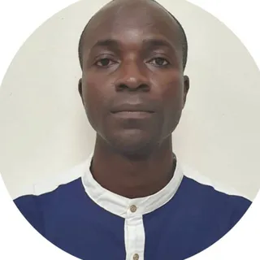
YEO YACOUBA4e Vice-Président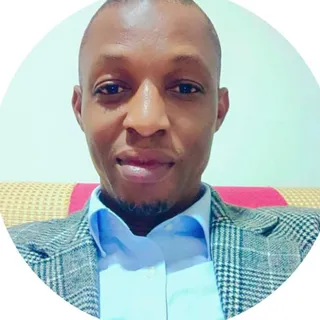
DIABATE MAMADOU DJEMORY5e Vice-Président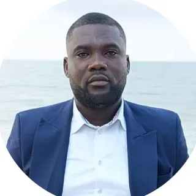
KOUAGBA FABRICE ARNAUDSecrétaire Général- SORO GOGNANIGA1er Secrétaire Général Adjoint
- KOUADIO ERIC2e Secrétaire Général Adjoint
- GBAMBLE TRAYE BI3e Secrétaire Général Adjoint
- ADO AKOUBA BEATRICESecrétaire à l’Organisation
- KOFFI JEAN NICAISE1er Secrétaire à l’Organisation Adjoint
- LABE DOGBA LANDRY2e Secrétaire à l’Organisation Adjoint
- AKOSSY LETI DEMARILLAC3e Secrétaire à l’Organisation Adjoint
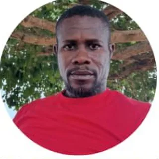
N’GUESSAN DOMINIQUE4e Secrétaire à l’Organisation Adjoint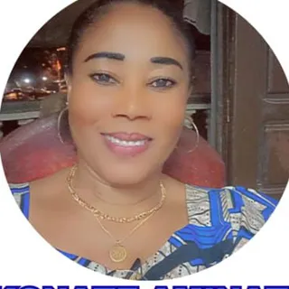
KONATE AMINATA1er Secrétaire aux Finances Adjoint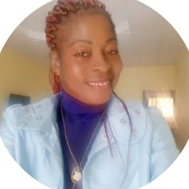
MANAN AKISSI SYLVANA2e Secrétaire aux Finances Adjoint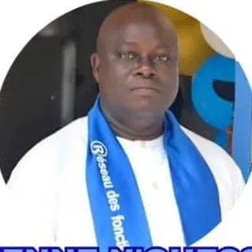
N’GUESSAN ETIENNESecrétaire aux Relations Extérieures et Coopérations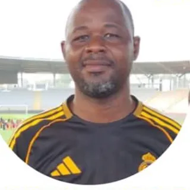
NIANGORAN KOUADIO CLAUDE1er Secrétaire aux Relations Extérieures et Coopérations Adjoint- KOKOU DESIREE2e Secrétaire aux Relations Extérieures et Coopérations Adjoint
Comité Exécutif National
Assure la mise en œuvre opérationnelle des décisions et des programmes sur l’ensemble du territoire : coordination des activités, supervision des comités régionaux, communication et mobilisation des membres.
 OUFFOUE N’DA FRANCISPorte-parole National
OUFFOUE N’DA FRANCISPorte-parole National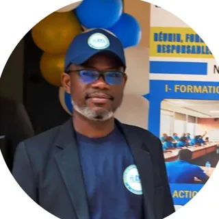
KONAN SAMUELSecrétaire National aux Finances (Trésorier général)
- TERSIA TCHETCHO STEPHANE1er Porte-parole National Adjoint
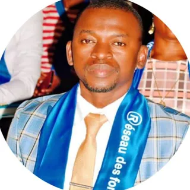
MANTOIDJA KOFFI MOUROUFIE2e Porte-parole National Adjoint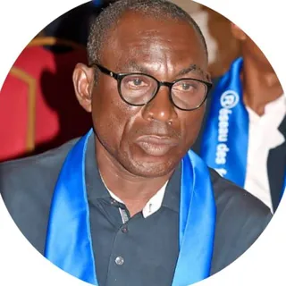
GNAORE SERI THEODORE3e Porte-parole National Adjoint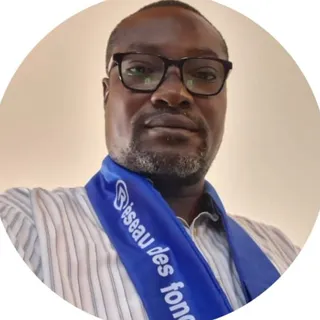
KONE ADAMA4e Porte-parole National Adjoint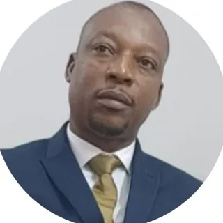
OUATTARA LACINASecrétaire Général National- OUELOGO STEPHANE RACHID1er Secrétaire Général National Adjoint
- GUE GUEHI ANICET2e Secrétaire Général National Adjoint
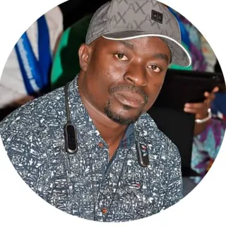
HANNIN SERGE OMERSecrétaire National à l’Organisation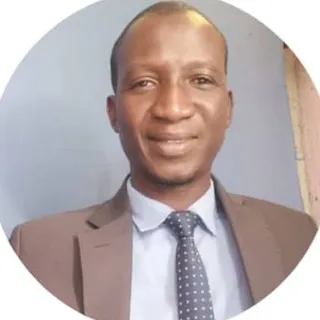
KOUADIO YAO STEPHANE1er Secrétaire National à l’Organisation Adjoint- N’GUESSAN FREJUS2e Secrétaire National à l’Organisation Adjoint
- N’TAMON EPSE ASSASecrétaire National aux Finances Adjoint
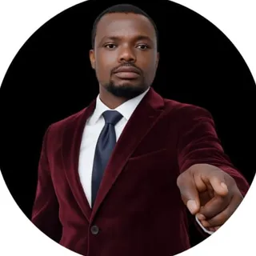
KONAN GAMBOU SERGESecrétaire National à la Communication- BENEDITE KOUASSI BEN ERIC1er Secrétaire National à la Communication Adjoint
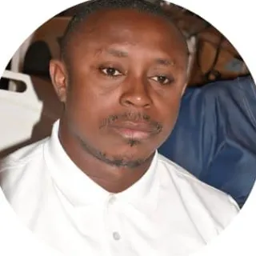
YSSAN KOUASSI VICTORIEN2e Secrétaire National à la Communication Adjoint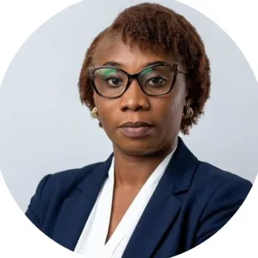
GOUE SONNEMAGNON FALONE ALIDASecrétaire National chargé des Affaires Sociales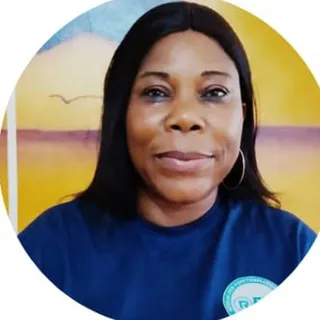
OUATTARA MAIMOUNA1er Secrétaire National chargé des Affaires Sociales Adjoint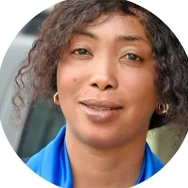
DOUMBIA DJENEBA2e Secrétaire National chargé des Affaires Sociales Adjoint- SILUE ALBERTINESecrétaire National chargé de la Mobilisation et de la Vie du Réseau
- OUATTARA BAKARYSecrétaire National chargé de la Mobilisation et de la Vie du Réseau
- BROU TANOH AIMESecrétaire National chargé de la Mobilisation et de la Vie du Réseau
- YAZI ZADI ANGE PATRICKSecrétaire National chargé des Projets et de la Recherche des Partenaires
- AMALAMAN JEAN TADJO PATERNESecrétaire National chargé des Projets et de la Recherche des Partenaires
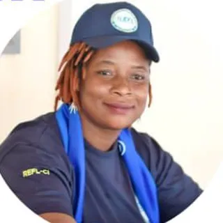
KONE TINDJOSecrétaire National chargé des Projets et de la Recherche des Partenaires- DIOMANDE ABOUBACKARSecrétaire National chargé de la Promotion du Leadership et de l’Excellence
- LOPOUA BI BENIE ANDERSONSecrétaire National chargé de la Promotion du Leadership et de l’Excellence
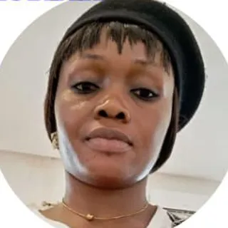
BARRY BARAKISSASecrétaire National chargé de la Promotion du Leadership et de l’Excellence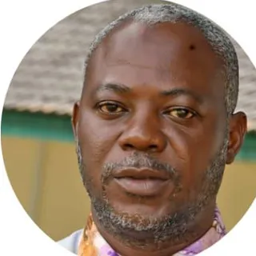
KIEN BI SE RAPHAELSecrétaire National chargé du Protocole du PPN- YAO AHUA VICTORIOSecrétaire National chargé du Protocole du PPN
- EKRA DANICK ARNAUDDirecteur de Cabinet du PPN
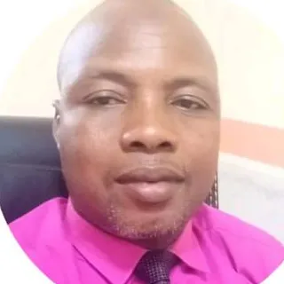
SEKONGO KODJANGAHIGUEDirecteur de Cabinet du PPN
Conseil de Surveillance et de Contrôle
Veille à la conformité des actes des organes dirigeants avec les statuts, le règlement intérieur et les principes de bonne gouvernance.
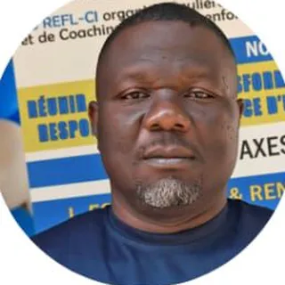
DEHI GAHI DANIELMembre- KABLAN VALERYMembre
- MANIGA SIDIKIMembre
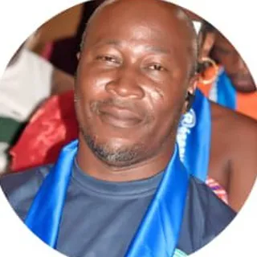
OUFFOUE N’DA FRANCOISMembre
Commissariat aux Comptes
Organe de contrôle financier : il vérifie la régularité, la sincérité et la transparence de la gestion financière du réseau.
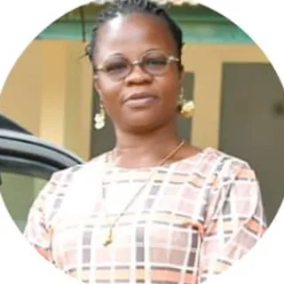
KONE MARIE ANGEMembre- KOUAME BELI CHRISTOPHEMembre
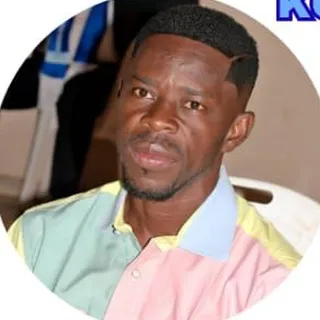
TAHOU BLESSON RACHIDMembre
Comité d’Étude et de Programmation des Formations
Recueille les besoins, élabore le programme et le calendrier national de formation, sélectionne les formateurs et veille à la qualité pédagogique.
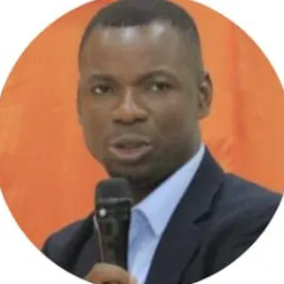
DAGO ZATCHE FERNANDPrésident
- DIABATE SALIMATAMembre
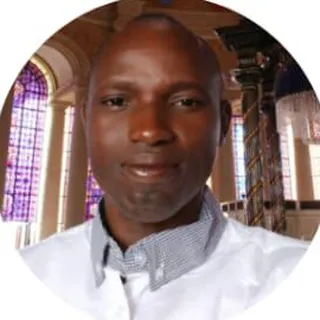
KOFFI ABELMembre- ETILE KOFFI ETIENNE GHISLAINMembre
- ASSOUMAN YAO NARCISSEMembre
Comité d’Étude et de Planification des Activités Ludiques
Planifie et coordonne les activités sportives, culturelles et récréatives, régionales et nationales.
- GOGOUA SIMPLICEPrésident
- KAMATE SALIM ABDOULMembre
- BAH JOCELYNEMembre
- YAO KOUASSI NOELMembre
- KONE KADIDIAMembre
Comité de Suivi et d’Encadrement
Tient la base de données des membres, enregistre les présences aux formations et activités, et propose la validation des niveaux.
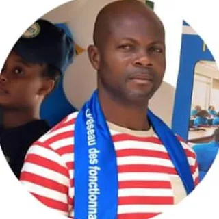
N’DOLY MICHELPrésident
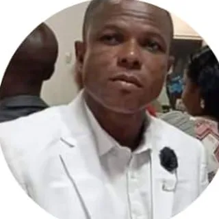
SEHA DIE OLIVIERMembre- BROU YVES ALEXMembre
- COULIBALY YELEMembre
- ALLOU FABRICEMembre
Conseillers consultatifs et juridiques
Apportent un appui stratégique, technique et juridique aux organes dirigeants et participent aux réflexions stratégiques.
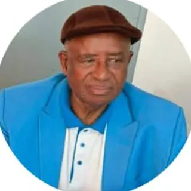
BABA KAKEConseiller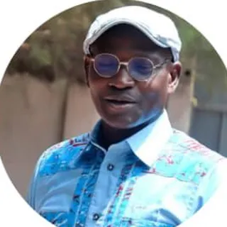
MAMADOU TOUREConseiller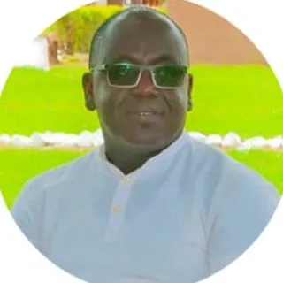
SANSAN KAMBOUConseiller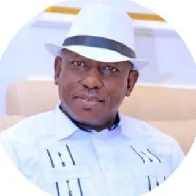
DOUKOURE MOCTARConseiller- KONE RAMOS VANDAConseiller
Délégations régionales
Les comités exécutifs régionaux font vivre le réseau dans chaque délégation régionale : formations, actions citoyennes, activités et galas. Pour adhérer ou vous informer, contactez le porte-parole de votre région.
- Délégation régionale de Abengourou
Porte-parole régional
À désigner
- Délégation régionale de Abidjan 1
Porte-parole régional
À désigner
- Délégation régionale de Abidjan 2
Porte-parole régional
À désigner
- Délégation régionale de Abidjan 3
Porte-parole régional
À désigner
- Délégation régionale de Abidjan 4
Porte-parole régional
À désigner
- Délégation régionale de Aboisso
Porte-parole régional
À désigner
- Délégation régionale de Adzopé
Porte-parole régional
À désigner
- Délégation régionale de Agboville
Porte-parole régional
À désigner
- Délégation régionale de Bondoukou
Porte-parole régional
À désigner
- Délégation régionale de Bongouanou
Porte-parole régional
À désigner
- Délégation régionale de Bouaflé
Porte-parole régional
À désigner
- Délégation régionale de Bouaké 1
Porte-parole régional
À désigner
- Délégation régionale de Bouaké 2
Porte-parole régional
À désigner
- Délégation régionale de Bouna
Porte-parole régional
À désigner
- Délégation régionale de Boundiali
Porte-parole régional
À désigner
- Délégation régionale de Dabou
Porte-parole régional
À désigner
- Délégation régionale de Daloa
Porte-parole régional
À désigner
- Délégation régionale de Danané
Porte-parole régional
À désigner
- Délégation régionale de Daoukro
Porte-parole régional
À désigner
- Délégation régionale de Dimbokro
Porte-parole régional
À désigner
- Délégation régionale de Divo
Porte-parole régional
À désigner
- Délégation régionale de Duékoué
Porte-parole régional
À désigner
- Délégation régionale de Ferkessédougou
Porte-parole régional
À désigner
- Délégation régionale de Gagnoa
Porte-parole régional
À désigner
- Délégation régionale de Grand-Bassam
Porte-parole régional
À désigner
- Délégation régionale de Guiglo
Porte-parole régional
À désigner
- Délégation régionale de Issia
Porte-parole régional
À désigner
- Délégation régionale de Katiola
Porte-parole régional
À désigner
- Délégation régionale de Korhogo
Porte-parole régional
À désigner
- Délégation régionale de Man
Porte-parole régional
À désigner
- Délégation régionale de Mankono
Porte-parole régional
À désigner
- Délégation régionale de Minignan
Porte-parole régional
À désigner
- Délégation régionale de Odienné
Porte-parole régional
À désigner
- Délégation régionale de San-Pédro
Porte-parole régional
À désigner
- Délégation régionale de Sassandra
Porte-parole régional
À désigner
- Délégation régionale de Séguéla
Porte-parole régional
À désigner
- Délégation régionale de Sinfra
Porte-parole régional
À désigner
- Délégation régionale de Soubré
Porte-parole régional
À désigner
- Délégation régionale de Tiassalé
Porte-parole régional
À désigner
- Délégation régionale de Touba
Porte-parole régional
À désigner
- Délégation régionale de Yamoussoukro
Porte-parole régional
À désigner
Les sections départementales et locales seront ajoutées progressivement.